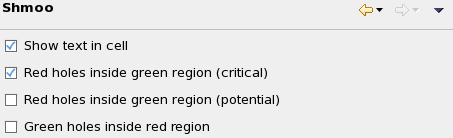
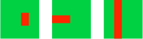
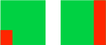

Shmoo preference settings
The Shmoo preference page lets you set display options for shmoo graphs.

The dialog contains these settings:
- Show text in cell: If this option is checked, each cell in the shmoo
plot displays its value, such as the pass rate or the first failing cycle.
For details about the values displayed depending on the result data type and display mode, see Shmoo graph modes.
- Red holes inside green region (critical): If this option is checked,
SmarTest displays annotations in data navigation and raw data views for rows that summarize tests with critical shmoo holes
where a failed region is surrounded by a passed region.
Shmoo holes are considered critical in these cases:
- They are completely surrounded by passed regions.
- They are surrounded by passed regions on three sides, and the fourth side is the border of the plot.
- They completely separate two regions of passed cells.

The color of these annotations and where they are displayed is set in the Annotations preference settings.
- Red holes inside green region (potential): If this option is checked,
SmarTest displays annotations in data navigation and raw data views for rows that summarize tests with potential shmoo holes
where a failed region is surrounded by a passed region.
Shmoo holes are considered potential when at least two of their sides are plot borders (and they do not separate two pass regions).

The color of these annotations and where they are displayed is set in the Annotations preference settings.
- Green holes inside red region: If this option is checked, SmarTest
displays annotations in data navigation and raw data views for rows that summarize tests with shmoo holes where a passed region is
surrounded by a failed region.
The color of these annotations and where they are displayed is set in the Annotations preference settings.
Functional changes
- Introduced in SmarTest 7.2.0
- SmarTest 7.2.1: New settings Green holes inside red region and Red holes inside green region.
- SmarTest 7.3.1: New option to distinguish between critical and potential red holes.